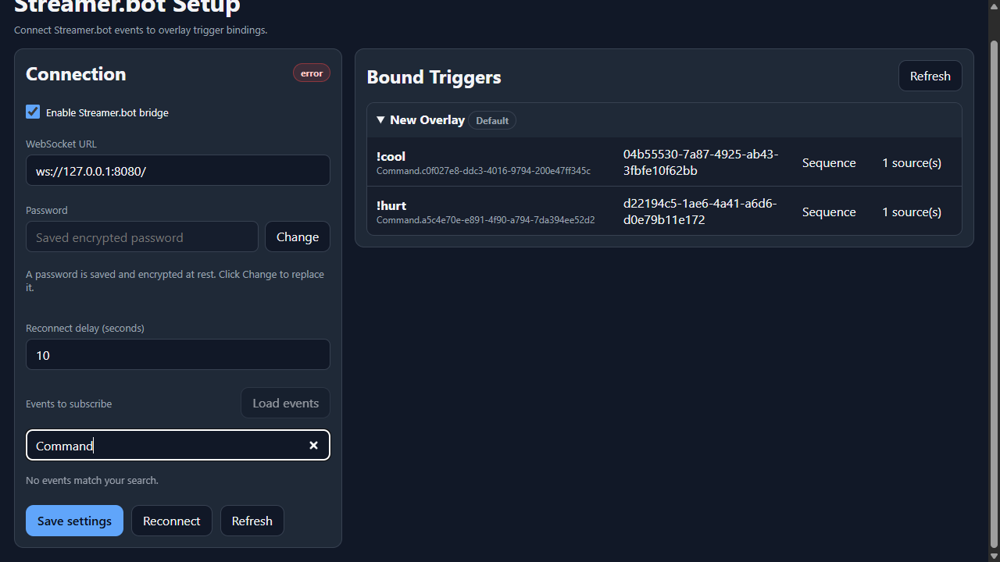

Integration
Streamer.bot Setup
Streamer.bot provides the events, commands, and actions that NekoBot can bind to overlay boxes.
Connection

The Streamer.bot bridge keeps NekoBot connected to Streamer.bot's WebSocket server. Once connected, NekoBot can subscribe to event groups and expose those events as overlay triggers.
- In Streamer.bot, enable the WebSocket server.
- Open NekoBot Setup Home and choose Streamer.bot Setup.
- Turn on
Enable Streamer.bot bridge. - Enter the WebSocket URL, usually
ws://127.0.0.1:8080/when Streamer.bot runs on the same machine. - Enter the WebSocket password if your Streamer.bot server requires one.
- Choose a reconnect delay. Start with
10seconds unless you have a reason to retry faster or slower. - Save settings, then use Reconnect or Refresh to verify the current status.
Connection Controls
This page is the landing page for everything NekoBot receives from Streamer.bot. If this page is disconnected, command triggers, action triggers, and raw event triggers cannot update overlay boxes.
Enable Streamer.bot bridgeTurns the background WebSocket bridge on or off. Disable it only when you do not want NekoBot to listen to Streamer.bot at all.WebSocket URLThe Streamer.bot WebSocket endpoint. For Streamer.bot on the same PC, start with ws://127.0.0.1:8080/.PasswordUsed when Streamer.bot's WebSocket server requires authentication. Saved passwords are encrypted at rest.Reconnect delayHow long NekoBot waits before retrying after a disconnect. 10 seconds is a good default for most setups.Save settingsStores the URL, password, reconnect delay, enabled state, and selected event groups.ReconnectForces the bridge to close and reopen the WebSocket connection using the saved settings.RefreshUpdates the visible status and known data from the current bridge state.Events
Events to subscribe controls which Streamer.bot event groups NekoBot listens to. Keep this list focused on the platforms and trigger types you actually use.
Load eventsAsks Streamer.bot for the available event catalog. Use this after the bridge connects or after changing Streamer.bot integrations.Search eventsFilters the event catalog when the list is large. Search by platform, event family, or event name.Event checkboxSubscribes or unsubscribes NekoBot from that event group. Subscribe only to the events you need for overlays.Selected eventsSaved with bridge settings and reused after reconnecting. These selected groups decide what raw triggers can appear later.If an event never reaches NekoBot, first check that the bridge is connected, then check that the matching event group is subscribed.
Bound Triggers

Bound Triggers shows the overlay boxes currently using Streamer.bot triggers. This is a quick audit view: it tells you which overlays, boxes, commands, trigger ids, source modes, and source counts are already wired.
Use this section when a command or event is firing but the wrong box reacts, or when you want to confirm that an overlay still has the expected Streamer.bot bindings.
OverlayShows which saved overlay contains the trigger. This helps when OBS is showing a different overlay than the one you edited.BoxShows the box that will react when the trigger fires.TriggerShows the command, action, or raw event bound to the box.Source modeShows how NekoBot chooses sources when the box has more than one source.SourcesShows how many sources are available for that trigger path.Trigger Types
Triggers can represent raw subscribed events, commands, or actions. Use Overlay Setup and the Add Trigger control to bind a trigger to a box.
Chat messageRegular chat overlays, moderation callouts, captions, or text boxes using {{message.text}}.CommandIntentional viewer commands such as !tts, !clip, !hype, or !meme.ActionStreamer.bot actions that should drive an overlay box after a more complex Streamer.bot workflow.Raw eventSubscribed platform events when you need direct matching against event data or raw hit rules.Example: Command Plays A Meme
- Connect the Streamer.bot bridge and subscribe to the command events you need.
- Open Overlay Setup and select the overlay used by OBS.
- Add or select the box where the meme should appear.
- Add a media source for the meme, video stinger, sound cue, or URL.
- Open Trigger and bind a command trigger such as
!hype. - Save the overlay, then test the command from chat or Streamer.bot.
Troubleshooting
- If the status shows a connection error, confirm Streamer.bot is running and that the WebSocket server is enabled.
- If the URL is local, use
ws://127.0.0.1:8080/unless you changed the Streamer.bot port. - If a password is saved, click Change only when you need to replace it. Saved passwords are encrypted at rest.
- If events do not appear, connect first, then click Load events.
- If triggers are bound but nothing appears on stream, verify the overlay URL is open in OBS and the box has a source that can display.
- If reconnects are too noisy, increase the reconnect delay.